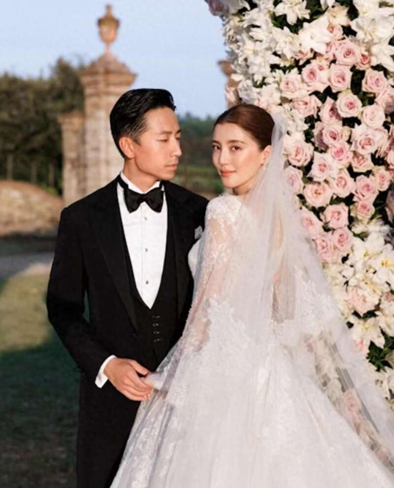
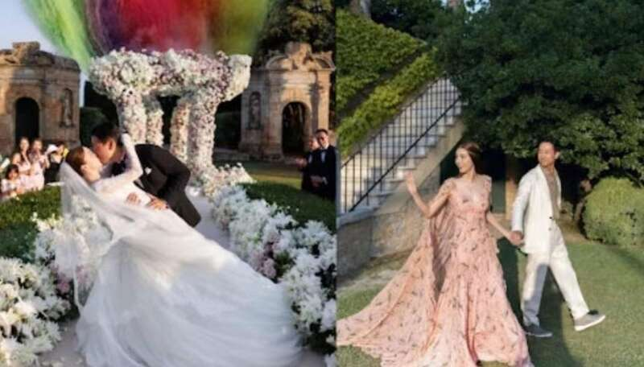
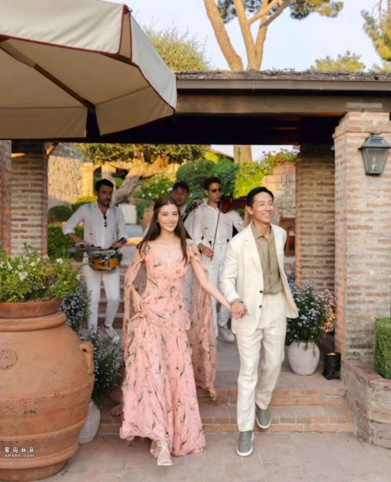
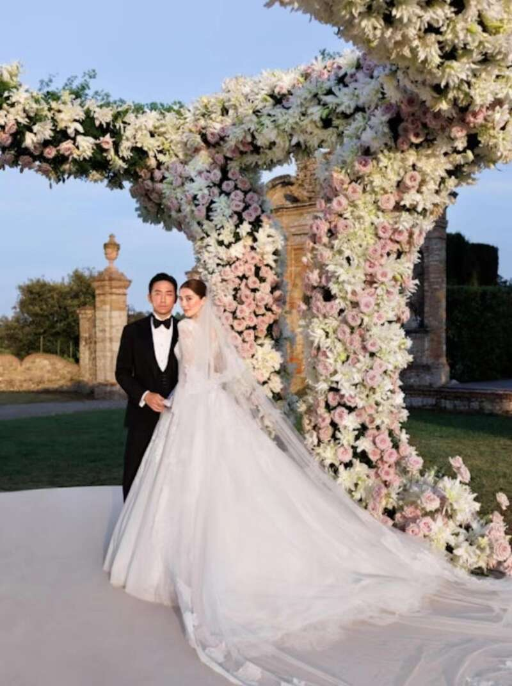
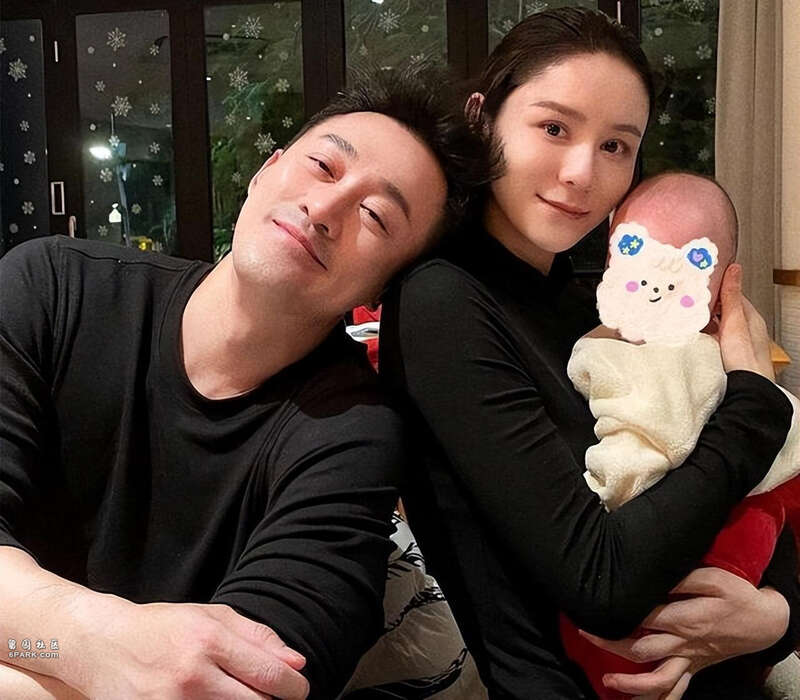

近日，相信有关注香港娱乐新闻的网友在这几天一直是被吴千语与富三代男友施伯雄的婚礼给刷屏。
现年30岁的吴千语其实在去年就与施伯雄在香港低调举行了证婚仪式，正式成为了合法夫妻，而最近他们就在意大利某郊外庄园补办了婚礼。

二人举办婚礼的庄园是在1768年被改建成为了别墅，别墅内部更是有古董壁画，非常华丽和浪漫。
同时婚宴是以意大利复古电影院为主题，加上庄园的气氛，可以说是有一种穿越旧时光的感觉呢。
而二人婚礼现场的照片也是分享在了网络上供大家欣赏，从这些照片中也的确是可以感觉出非常华丽以及浪漫，相信也是很多女生所憧憬的婚礼画面，不得不说的是吴千语就像是童话中的公主一般。
正是因为吴千语华丽的婚礼，不禁也是让网友们想起了她的旧爱林峯，因为每每提起吴千语的时候，大家总是不由自主地会想到当年她与林峯的感情，毕竟二人当时的那段感情还是很轰轰烈烈的。

所以最近除了吴千语成为了网友们热议的对象之外，她的旧爱林峯也是不例外，不过在林峯这一边，网友更多的是对他的嘲讽。
因为林峯曾在一档节目中答应要为妻子举行巡游婚礼，但结婚至今几年的时间了，这个计划都还没有实行。

所以如今大家在看到吴千语的华丽婚礼，再对比起林峯，不少网友可以说是纷纷直言对比明显呀。
确实从吴千语晒出的婚礼照片中来看，整个婚礼都是很高级的，所以网友们也都是为吴千语送上祝福，恭喜她完成了心中理想的婚礼。

而在看到林峯和太太张馨月社交平台上留言，画风可以说是变得很不一样，大家纷纷嘲讽他们说好的巡游婚礼至今都没有完成，同时还更是质疑他们当初说的话只是在作秀。
网友们留言称：“装作自己很关注奥运，掩盖自己没办婚礼的心”、“你不打算给你老婆补办一个婚礼吗”、“看看吴千语的婚礼，你老婆的婚礼呢”等等。
之所以大家对此这么印象深刻，是因为当初张馨月在参加节目《妻子的浪漫旅行》中就公开表示林峯曾答应她要举办一个像巡游的婚礼，她说：想办一个这种巡游的婚礼，香港、厦门、盐城。
对此当时林峯的回应是因为自己是厦门人，老婆是盐城人，自己又是在香港长大，所以他婚礼是想要照顾到两边的家人。

同时林峯还认为婚礼无论是对于女生还是男生，都是很重要的人生大事，而他也是很想完成与老婆心目中的一个婚礼。
在当时节目播出之后，其实也有不少网友就隔一段时间就留言表示对他们补办婚礼做出关心，不过张馨月也曾回复过网友称：我不想办，感觉办婚礼好累。因此不知道是不是因为这个原因，所以也就令得二人的巡游婚礼计划就此取消了？
Advertisements